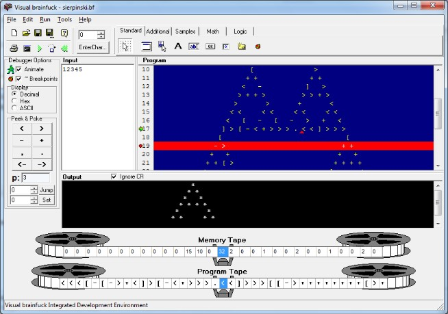

Getting Started
Visual brainfuck is an award-winning Integrated Development Environment for the seamless development of high-end, professional brainfuck applications.
Visual brainfuck includes a syntax-highlighting text editor, a brainfuck compiler, and a debugger with step-by-step execution, memory watch, breakpoint, and animated code execution capabilities.
Visual brainfuck has a visual interface similar to Delphi, which integrates components for the convenience of the programmer, such as the insertion of building blocks into the code for a fast development experience.
There are two useful tools included: a Text Encoder for the generation of brainfuck programs that print the desired text; and an Ook! <-> brainfuck translator for the convenience of orang-utans.
The main Visual brainfuck window looks like this:

Visual brainfuck has won the 2011 Finished Stuff Award given to the author by the author.
Copyright © 2003-2011, Kuashio
Created with the Freeware Edition of HelpNDoc: Free HTML Help documentation generator